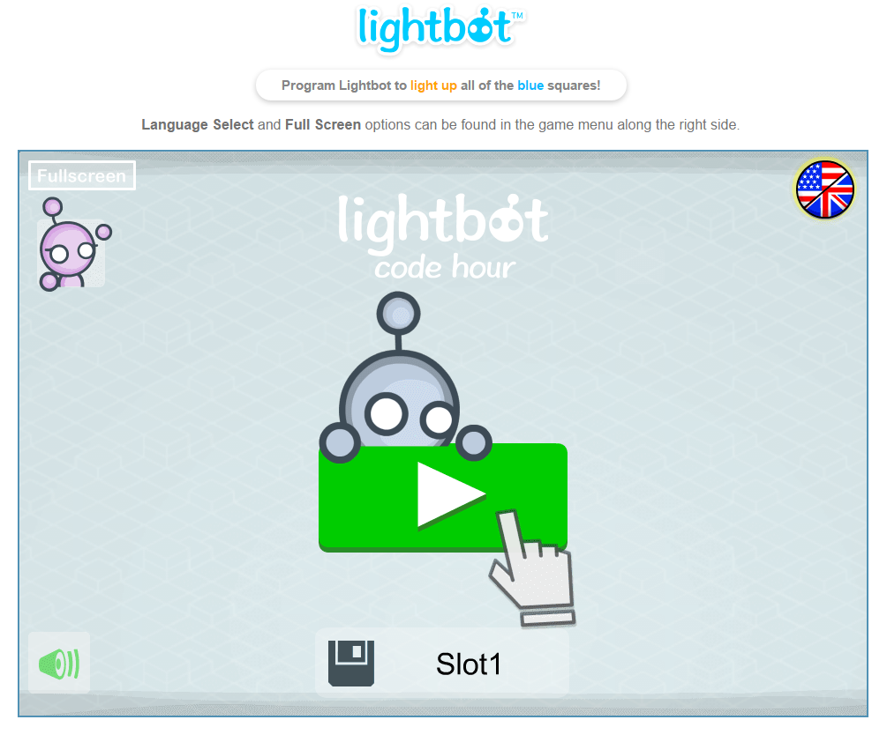
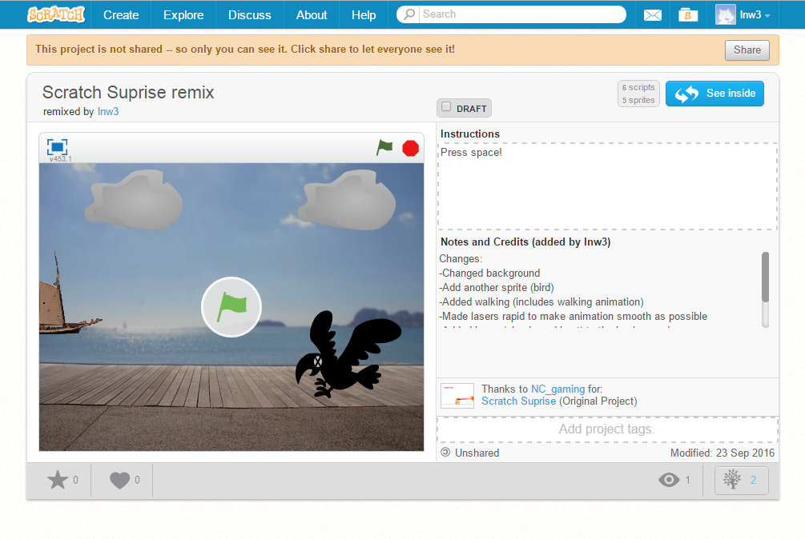
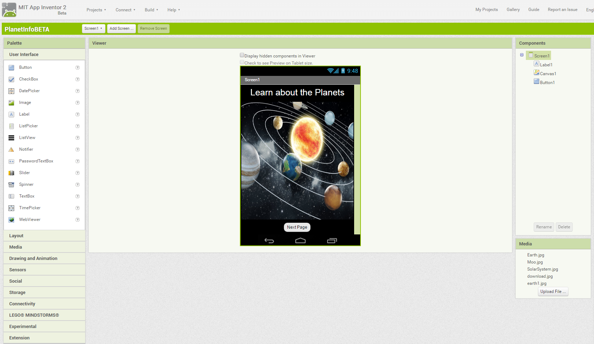

Portfolio
Every single work I have done in the Computer Science pathway from 2016-2017
Light Bot
This is the first project I have done in the Computer Science pathway in the beginning of the year,
which was late-summer 2016. Lightbot taught me the idea of programming requires several commands/procedures
in order to process and do the commands as written to it as programmed. It also taught me that programming
would take several tries and would fail over small errors.
Scratch
Shortly after completing Lightbot, this was the next project I had to do. It was more of a intro to beginner
coders like me, and it gave me a small but yet better idea of how programming softwares might look. But yet
again it was nothing like how the rest of programmings softwares are like after finishing and moving on to the
next project. Although I would say it was better intro than Lightbot since it actually gives you the liberty to
design, code, and decide whatever you want to make.
App Inventor
Next it was App Inventor. So before I was able to start my project for App Inventor, I had to learn the fundamentals
first in order to know some of the properties and functions available in the program. Which I had to do a few lessons/tutorials
before starting but was worth doing them since I learned many things about App Inventor and what you can do in it. Afterwards
I had to start making app with a team of other people in my class which were in the pathway as me. Of course it was difficult
since I had to deal with teamwork issues and so on. But after all, it gave me a small idea the processes of creating an app from
from scratch
Khan Academy

For Khan Academy the idea of doing various lessons and challenges were pretty straight forward. Which I had to go through
lessons about html and css from the beginning to the end of topic. Where the lessons teach you the basics of Html and Css
and you had to go through them in order to progress to more lessons and challenges. The challenges test your understanding of
previous lesson you have passed. At the end of each lesson there were tests which were similar to the challenges but instead
it had questions that focus on the lesson you went through and you get a score of your understanding. Anyways Khan Academy has
tremendously taught me most of the things I know so far about Html and Css.
Notepad ++

After finishing every lesson of Html and Css in Khan Academy, Notepad was next in the list of projects. I wouldn't say that
Notepad was really a project but more of a starting point of understanding how most free coding programs work and run. Also when
doing the assignment, it taught me how to open the code in a page of a browser, and how to make a link that connects the file of the
Html to a stylesheet which is the Css. Another thing in Notepad is that I learn what to expect most the free coding programs to have.